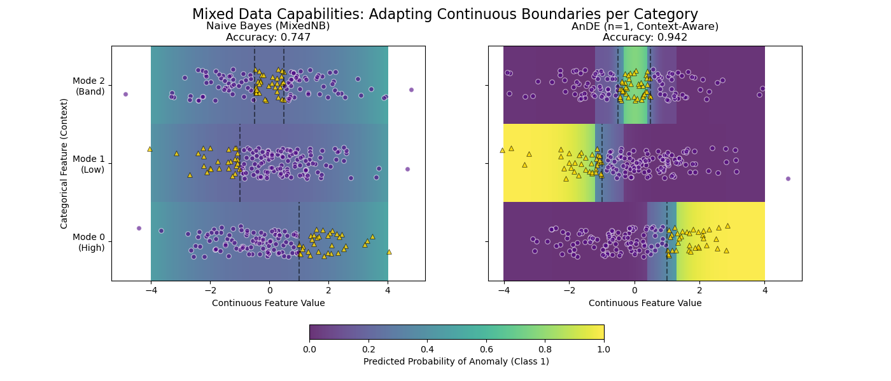

Note
Go to the end to download the full example code.
The Power of Mixed Data: Context-Dependent Logic#
This example demonstrates why AnDE shines with mixed data types (Continuous + Categorical) compared to Naive Bayes.
We simulate a system with a Continuous Feature (X) and a Categorical “Mode” (C). The definition of “Anomaly” (Class 1) changes completely depending on the mode.
Result: - MixedNB (Naive): Fails. It smears probability across the range. - AnDE (n=1): Succeeds. It learns distinct boundaries per mode.
Training models...
# Author: The scikit-bayes Developers
# SPDX-License-Identifier: BSD-3-Clause
import warnings
import matplotlib.pyplot as plt
import numpy as np
from sklearn.metrics import accuracy_score
from skbn.ande import AnDE
from skbn.mixed_nb import MixedNB
# Suppress discretization warnings for this demo
warnings.filterwarnings("ignore", category=UserWarning)
# --- 1. Generate Mixed Dataset ---
np.random.seed(42)
n_samples = 3000
# Feature 0: Continuous (Standard Normal)
X_cont = np.random.randn(n_samples, 1) * 1.5
# Feature 1: Categorical (0, 1, 2)
X_cat = np.random.randint(0, 3, size=(n_samples, 1))
# Stack them
X = np.hstack([X_cont, X_cat])
# Logic:
y = np.zeros(n_samples, dtype=int)
# Mode 0: Positive High (> 1)
mask_0 = (X_cat.flatten() == 0) & (X_cont.flatten() > 1.0)
y[mask_0] = 1
# Mode 1: Positive Low (< -1)
mask_1 = (X_cat.flatten() == 1) & (X_cont.flatten() < -1.0)
y[mask_1] = 1
# Mode 2: Positive Middle (-0.5 < x < 0.5)
mask_2 = (X_cat.flatten() == 2) & (np.abs(X_cont.flatten()) < 0.5)
y[mask_2] = 1
# --- 2. Fit Models ---
print("Training models...")
mnb = MixedNB()
mnb.fit(X, y)
ande = AnDE(n_dependence=1)
ande.fit(X, y)
models = [mnb, ande]
titles = ["Naive Bayes (MixedNB)", "AnDE (n=1, Context-Aware)"]
# --- 3. Visualization ---
fig, axes = plt.subplots(1, 2, figsize=(14, 6), sharey=True)
# Grid for plotting
# We need CENTERS for prediction, but EDGES for pcolormesh plotting
n_points = 200
x_centers = np.linspace(-4, 4, n_points)
# Create edges for X (must be length n_points + 1)
step = x_centers[1] - x_centers[0]
x_edges = np.concatenate([x_centers - step / 2, [x_centers[-1] + step / 2]])
# Y edges are manual (categorical bands)
y_edges = np.array([-0.5, 0.5, 1.5, 2.5])
# Prediction loop
for ax, model, title in zip(axes, models, titles):
acc = accuracy_score(y, model.predict(X))
# Construct probability map
prob_map = np.zeros((3, n_points))
for cat_val in [0, 1, 2]:
# Create a batch of data: [x_centers, constant_cat]
batch_cat = np.full((n_points, 1), cat_val)
batch_X = np.hstack([x_centers.reshape(-1, 1), batch_cat])
# Predict
probs = model.predict_proba(batch_X)[:, 1]
prob_map[cat_val, :] = probs
# Plot Heatmap - VIRIDIS
# cmap='viridis': Purple (0.0) -> Yellow (1.0)
pcm = ax.pcolormesh(
x_edges,
y_edges,
prob_map,
cmap="viridis",
vmin=0,
vmax=1,
shading="flat",
alpha=0.8,
)
# Overlay real data points
mask_sub = np.random.choice(n_samples, 400, replace=False)
X_sub = X[mask_sub]
y_sub = y[mask_sub]
# Jitter Y for visibility
y_jitter = X_sub[:, 1] + np.random.uniform(-0.2, 0.2, size=len(X_sub))
# Class 0 -> Indigo Circle (Low prob)
ax.scatter(
X_sub[y_sub == 0, 0],
y_jitter[y_sub == 0],
c="indigo",
marker="o",
s=30,
alpha=0.6,
edgecolors="w",
linewidth=0.8,
label="Class 0",
)
# Class 1 -> Gold Triangle (High prob)
# Black edge for contrast against yellow background
ax.scatter(
X_sub[y_sub == 1, 0],
y_jitter[y_sub == 1],
c="gold",
marker="^",
s=30,
alpha=0.8,
edgecolors="k",
linewidth=0.5,
label="Class 1",
)
ax.set_title(f"{title}\nAccuracy: {acc:.3f}")
ax.set_xlabel("Continuous Feature Value")
ax.set_yticks([0, 1, 2])
ax.set_yticklabels(["Mode 0\n(High)", "Mode 1\n(Low)", "Mode 2\n(Band)"])
# Reference lines
ax.vlines(1.0, -0.5, 0.5, colors="black", linestyles="--", alpha=0.5)
ax.vlines(-1.0, 0.5, 1.5, colors="black", linestyles="--", alpha=0.5)
ax.vlines([-0.5, 0.5], 1.5, 2.5, colors="black", linestyles="--", alpha=0.5)
axes[0].set_ylabel("Categorical Feature (Context)")
cbar = fig.colorbar(
pcm, ax=axes.ravel().tolist(), orientation="horizontal", fraction=0.05, pad=0.15
)
cbar.set_label("Predicted Probability of Anomaly (Class 1)")
fig.suptitle(
"Mixed Data Capabilities: Adapting Continuous Boundaries per Category", fontsize=16
)
plt.show()
Total running time of the script: (0 minutes 0.196 seconds)